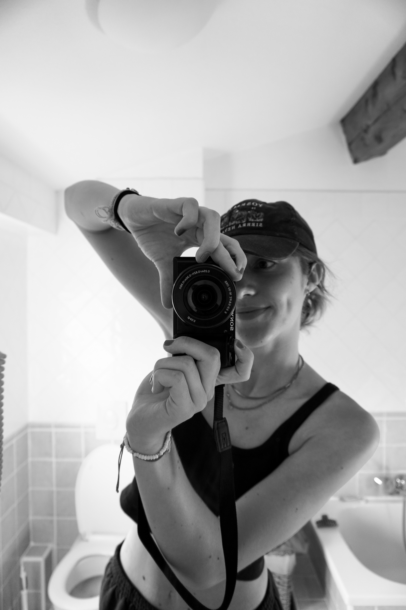
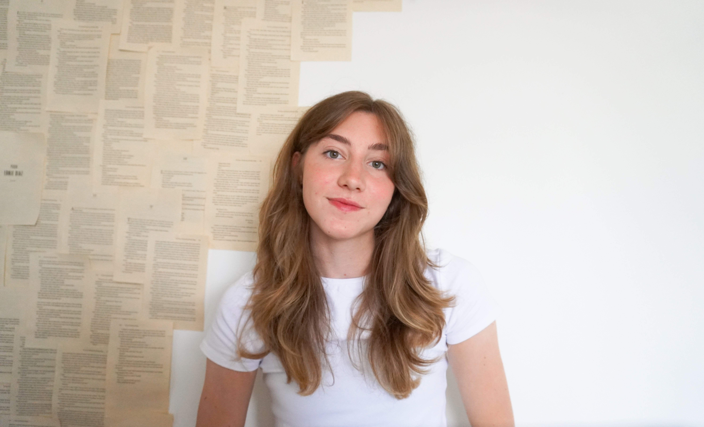
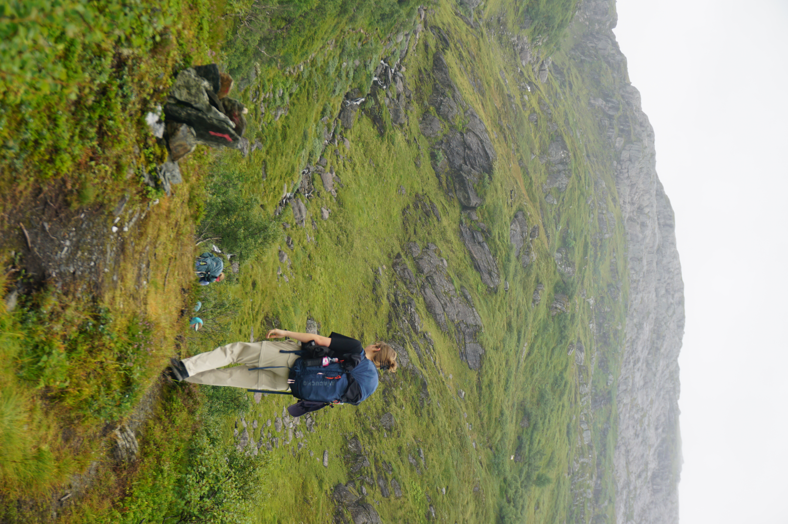
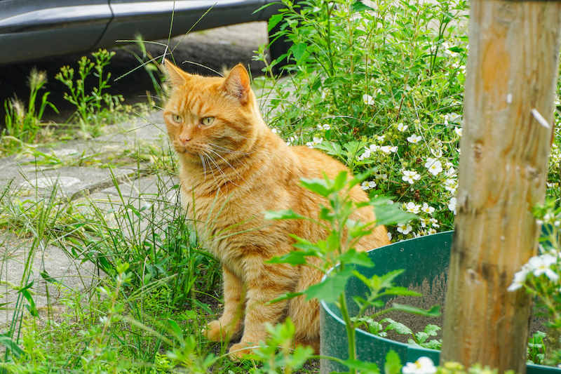
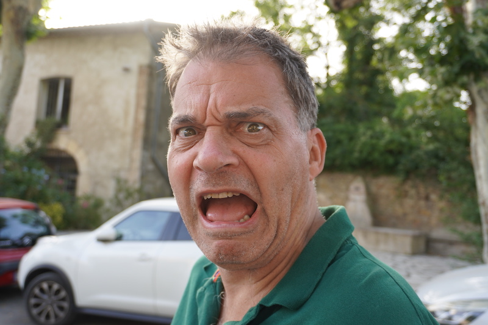

Portfolio



Hi :)
Fotografie
Uitleg




Design
Graphic
Photoshop
Cadeau’s
Deze ontwerpen heb ik gemaakt voor de verjaardagen van vrienden en familie. De ontwerpen zijn bedrukt op mokken, shirts en kaarten.

60 jaar Jos
Voor mijn vaders 60ste verjaardag heb ik een puzzel laten bedrukken. In het ontwerp zit alles wat bij mijn vader past en dingen die voor ons belangrijk en grappig zijn.
Verjaardagsuitnodiging
De uitnodiging die ik voor mijn oma’s 80ste verjaardagsfeest heb ontworpen.
Laura’s grote wereldreis
Voor de volledige animatie: zie bij de video’s :)
Pannenkoeken
In het project Pan & Koek, waarbij ik mijn eigen pop-up store heb ontworpen, is een van de aspecten pannenkoeken met bijzondere combinaties. Om een beter beeld te creëren heb ik de combinaties gephotoshopt.
Illustration


Projecten
Project introductie
Feit of fictie is een campagne gericht op Generatie X (45–60 jaar) die Facebook gebruikt als belangrijkste nieuwsbron. Omdat Facebook geen content meer factcheckt en algoritmes gebruikers steeds dieper in filterbubbels trekken, is deze generatie extra kwetsbaar voor misleidende informatie en complottheorieën. Feit of fictie biedt een laagdrempelige oplossing: een browser-extensie en de bijbehorende website. Het doel is niet om mensen van Facebook af te jagen, maar om ze met een beetje humor en een kritische blik bewuster te laten omgaan met wat ze dagelijks voorbij zien komen.
Hoe kan ontwerp Generatie X (45–60 jaar) activeren om kritisch en bewust te kijken naar de betrouwbaarheid van content op Facebook, op een laagdrempelige manier die aansluit bij hun bestaande gebruik van het platform?
Webextensie
- Laagdrempelig.
- Betrouwbaarheidsoordeel.
- Laadcirkel, aantal gescande berichten, info-knop, foutmelding.
- Iedereen kan installeren (videouitleg).
- ‘Controleer’-knop
- Scan Facebook
- AI-analyse via Chutes/Qwen API
- Betrouwbaarheidsoordeel
Website
- 5 pagina’s.
- Mobiel responsive.
- www.feitoffictie.com echt live.
- Home
- Informatiepagina
- Extensie + uitlegvideo’s
- Webshop
- Over ons
Middelen
- Stickers (kritisch + algemeen).
- Flyers bij bibliotheek.
- Telefoonhoesje voor mobielgebruik.
- Mokken voor werkvloer.

middelen


OnHANDig
In dit vak doet de student creatief onderzoek op basis van een experimentele aanpak. Door middel van experimenten met een zelfgemaakte research tool en het zoeken en verwerken van bronnen. Onderzoek voor dit vak richt zich op het adaptieve karakter van de mens, de zintuigelijke waarneming en de relatie tussen mens en technologie. Ook leert de student conclusies te verbinden aan de gevonden resultaten en dit systematisch te verwerken in een research poster.
Fire Hazard
LIAR LIAR PANTS ON FIRE
Don't let them know otherwise your ass will show
You and your friends have gathered around to play a game of cards, when suddenly you feel a burning sensation in your upper leg. An ember from the nearby fireplace has jumped right in your pocket and set your pants on fire! Your friends are starting to raise their eyebrows at your red-hot face. Quick, make up a lie so they won't discover your bare bottom! But smoke is rising up from beneath one of your friends asses, maybe they are hiding something as well...


Foto's gemaakt door Evelien Denneman
Bakkie Babbel
Hoe kan ik namens Bibliotheek Midden-Brabant onverwachte ontmoeting tussen bezoekers in de publieke ruimte stimuleren? Met als doel de interactie tussen bezoekers uit verschillende ‘bubbels’.
The concept
Met Bakkie Babbel en De Praat Tafel willen wij onverwachte ontmoetingen stimuleren door de drempel tot contact te verlagen. Met het Bakkie Babbel kun je aangeven dat jij open staat voor een gesprek. Het kopje of de beker met fel gekleurde strepen laat duidelijk zien dat jij open staat voor een snelle babbel of een lang gesprek.
Weet je niet waar je het over moet hebben? Geen probleem! Op het Bakkie Babbel staat een laagdrempelig gespreksonderwerp zodat je altijd iets hebt om over te praten!
De Praat Tafel tilt dit naar een nieuw niveau door een aangewezen plek te creëren met oneindig veel gespreksonderwerpen. Van luchtig en simpel tot wat meer serieus, alles komt aan bod.
Promotie
Expositie op school
Oertijd Museum
Pan & Koek
Vak uitleg:
Experience Design
Je ontwerpt je eigen pop up store. Verzint een uitdagend concept. Je bent helemaal vrij in waar de store over gaat en wat je er gaat verkopen.
Werk de totaalervaring van een (potentiële) klant uit in een customer journey. Visualiseer de belangrijkste touchpoints. De bedoeling is mensen op een actieve manier aan te spreken en in aanraking te brengen met het aangeboden product of dienst.
Mobile Design
Het tweede deel draait om Mobile Design, dus het ontwerpen voor apps en wearables. Binnen jouw pop-up store ervaring maak je gebruik van een zelf ontworpen app. Je werkt de vormgeving, functionaliteit en navigatie van de app uit voor gebruiksvriendelijk mobiel gebruik.
Generatief
Met Generative Design maak je gebruik van vaststaande systemen, regelsets of algoritmes binnen het ontwerpproces om gevarieerde output te genereren. In het proces werk je met navolgbare regels en variabelen waarbinnen beperkte keuzes gemaakt kunnen worden. “Als dit, dan dat”. Het proces kan zowel analoog als digitaal plaatsvinden. Generative Design volgt een iteratief ontwerpproces waarin de ontwerper verschillende versies (regels, variabelen, inputs, outputs) test voordat een uiteindelijk systeem wordt toegepast.
Speculatief
Ontwerpers moeten in staat zijn om te bepalen hoe toekomstige ontwikkelingen invloed hebben op hun werk. Maar ook: hoe hun ontwerpen kunnen bijdragen aan mogelijke of gewenste toekomstige ontwikkelingen. In deze module breng je (jouw visie op) de toekomst in kaart en ontwerp je toekomstscenario’s waarin door jou bedachte producten medebepalend zijn. Behandelde onderwerpen in deze module zijn: speculative design, design fiction, scenario planning, artificial intelligence en bio-based design.


InterNetTeVeel
Out Of It
een speculatief project over het gevolg van de fast fashion industrie
Wat als iedereen nog maar
één outfit
mocht dragen
Zou je de outfit die je nu aan hebt dragen bij een sollicitatiegesprek? Bij je trouwdag? Zou je hem ook nog morgen dragen? En over morgen? En over over morgen? Zou je deze outfit de komende 25 jaar dragen? Wat als je geen keuze zou hebben. Wat als de fast fashion industrie zo erg is doorgedraaid dat er geen keuze meer is. Zo erg dat alles moet veranderen, behalve je outfit. In deze wereld heb je één outfit en daar moet je het mee doen. Hoe ziet een wereld eruit waarin mensen weg gehaald worden van de eindeloze trends en overconsumptie.
hoe
Hoe wordt er gecontroleerd?
Wat valt er onder één outfit?
Hoe zou een kleding kast voor één outfit eruit zien?
Dezelfde outfit maar toch anders
gevolg
Speciale gelegeheden in je enige outfit
werken in je enige outfit
Wat gaat er met de fashion media gebeuren?
Wat gebeurd er met fabrieksarbeiders?
Video
stopmotion.
jaren 80 speelgoed reclame
[uitleg over dit project.]
animation project
[uitleg over dit project.]
animatie.
Laura's wereldreis
[uitleg over dit project.]
Berry's Koffie Café
[uitleg over dit project.]
korte animatie.
Is there something on my face - eern dags animatie project
Whats bugging?
BREW POTIONS & HELP BUGS WITH THEIR PROBLEMS
A wonderful cozy game where a witch the size of a button sets out to help the lil critters in the forest. They all have their mental health struggles: Time management, creative blocks, you name it. But this little witch can brew magical potions, using ingrediënts with strange effects like cloud moss that calms the mind, or lightbulb flowers for bright ideas. Enjoy a whimsical journey!


3D.
binnenkant
karakters
Groen Geluk.
Samen met een redactie stagiair heb ik dit boekje gemaakt van begin tot eind; concept, inhoud, structuur, styleguide, vormgeving, illustraties. Voor het magazine TuinSeizoen, Vipmedia, heeft weken in alle supermarkten en boekwinkels van Nederland en België gelegen.
“Met de inhoud van dit boekje hopen wij je te begeleiden op jouw weg naar rust, ontspanning en geluk.”
CMD projecten.
Communication and Multimedia Design, Avans University of Applied Sciences
Hobby.
sorry,deze pagina is nog niet af
Borduur eendjes.
Over mij
Hellooo,
Een paar leuke feitjes over mij,
Ik journal iedere dag, soms is het meer een dagboek, maar ik kan hierdoor heel goed reflecteren over de dag en mijn gedachtes een plekje geven om met een rustig hoofd te slapen.
Ik heb na honderden kilometers op mijn versnellingsloze stadsfiets toch toegegeven en een hele oude retro racefiets aangeschaft genaamd Japie aka Vlugge Japie (het achterneefje van Snelle Jelle), waar ik nu ontzettend van geniet. Inmiddels ben ik hierdoor ook met plezier beginnend fietsenmaker geworden.
Ik hou enorm van lezen, iets wat ik vroeger nooit dacht te kunnen zeggen, maar nu ga ik nooit de deur uit zonder boek. Ik lees met plezier boeken meermaals; het scheelt want mijn geheugen is in dat opzicht niet gigantisch denderend, dus ieder half jaar heb ik weer een nieuwe boekenkast die ik opnieuw kan lezen.
Alles wat met draad is vind ik enorm leuk. Ik ben al jaren een fanatieke haker en breier, en daar is een naaimachine bij gekomen. Voor alles wat ik nodig heb verzin ik wel een manier om het eerst zelf te maken. Is het te ingewikkeld, dan verzin ik wel een manier dat ik het toch kan maken, want een patroon of tutorial daar ben ik iets te eigenwijs voor.
Knutselen doe ik niet alleen graag met de hand maar ook op mijn laptop. Voor iedere verjaardag of speciale gelegenheid creëer ik graag iets persoonlijks voor mijn vrienden en familie: een bedrukte mok, t-shirt of puzzel. Ik ben vaste klant bij de HEMA-fotoservice. Vaak door middel van foto’s die ik heb verzameld, een vleugje humor en Photoshop, knutsel ik van alles in elkaar.
Mijn guilty pleasures zijn documentaires en puzzelboekjes. Ik heb ongeveer alle documentaires van alle streamingdiensten afgeplukt en gekeken, met als favoriet ‘Free Solo’ en 'The Social Dilemma'. Ik speel iedere dag alle puzzels in de Algemeen Dagblad-app, maar mijn favoriete puzzel is en blijft toch altijd de tectonic.
Ik kijk graag tv, en dan bedoel ik niet Netflix of Disney+, maar echte Nederlandse tv. Mijn all-time favorieten zijn: Heel Holland Bakt, Boer Zoekt Vrouw, Expeditie Robinson, Wie is de Mol, De Slimste Mens en B&B/Winter vol Liefde.
Hobbies:
liefs,
Nadua
Contact:
Personal email-address:
nadua.van.gorkum@gmail.com
Phone-number:
+31 6 40999736